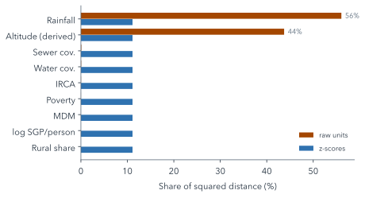

10 From Table to Features
Quarto, reproducible publishing, coding assistants, Markdown, Python, EPUB, data analysis, k-means clustering
A clustering algorithm does not read a table the way a person does. It sees numbers, measures distances between rows, and groups rows that are close. Everything about the result depends on which rows it sees, which numbers, on what scale, and what it is given where a number is missing. Preparation is the name for those decisions, and they shape the clusters as much as the algorithm does.
This chapter makes four decisions about the water data, explains each, and counts what each one costs in rows. Then the assistant writes them into scripts/analysis.py, the one script that every later page reads.
10.1 Four steps from table to features
1. Select. Keep the years 2016 to 2023, because the municipal performance index (MDM), one of the features, starts in 2016. Keep municipalities only: San Andrés has none of DNP’s values and the non-municipalised areas are nearly empty. Keep only rows with an IRCA value, since water safety is the point of the analysis.
2. Transform. Transfers for water per person (SGP) are heavily skewed, with a few very large values, so the analysis uses their logarithm. Department capitals have no urban and rural split for coverage, so their urban rows use the municipality’s total coverage instead, and a flag column records that they did.
3. Impute, with flags. Drop rows missing more than two of the nine features. Fill the remaining gaps with the median of the same year and zone, and add a flag column, such as water_coverage_imputed, that marks every filled value.
4. Standardise within each year. Replace each feature by its z-score within its year:
\[z = \frac{x - \bar{x}_{\text{year}}}{s_{\text{year}}}\]
where \(\bar{x}_{\text{year}}\) and \(s_{\text{year}}\) are the feature’s mean and standard deviation over that year’s kept rows. A z-score of +1 means one standard deviation above that year’s average.
Why within each year rather than over all years? Two reasons. SGP is in nominal pesos, not adjusted for inflation, so its values drift upwards over time for reasons unrelated to any municipality. And other features shift as a whole from year to year. Standardising within each year removes both shifts, so a single clustering over all years gives labels that mean the same thing in 2016 and in 2023.
Every fill is a guess, and an unflagged guess becomes indistinguishable from data. The flags make the guesses countable and checkable later: a cluster made mostly of imputed values would be a cluster of medians, not of places. The rule of the project, from its AGENTS.md: nothing is filled silently.
10.2 What the steps keep
Each decision has a price in rows (Table 10.1).
prepare().
| Step | Rows |
|---|---|
| municipality rows, 2016–2023 | 17,648 |
| dropped: no IRCA | 6,411 |
| dropped: more than two features missing | 2 |
| kept: 7,534 urban and 3,701 rural | 11,235 |
The kept rows cover 1,090 municipalities. 653 rows have at least one imputed value, and 214 urban rows of department capitals took the municipal total for coverage.
Almost all the loss is the first drop: rows without an IRCA value, most of them rural zones that are never sampled (Section 9.2). So the rural cluster that appears in the next chapter describes sampled rural systems only. The imputed values are coverage values: the rural rows of capitals, and municipalities whose split is missing in some years.
10.3 Why scale?
k-means groups rows by straight-line, or Euclidean, distance: the square root of the sum of squared differences across the features. A feature’s share of that squared distance, between two rows picked at random, is proportional to its variance. In raw units, the features measured in thousands, such as millimetres of rain and metres of altitude, dwarf those measured from 0 to 100 (Figure 10.1).

Unscaled, rainfall and altitude together would make up 99.8% of the distance, so the clusters would be climate zones and the water variables would hardly count. After z-scores, every feature has variance 1 and contributes the same share, about 11%. The log of SGP matters too: with raw pesos, SGP alone would dominate.
Equal weight is itself a choice, not a neutral default. Nine z-scored features count equally, so the three coverage-and-safety variables count for a third of the distance and context for the rest. If water safety should weigh more, that is a decision to make explicitly and report, not to leave to the units the data happened to come in.
10.4 Building prepare()
Two prompts write the four steps into the project’s script. The first selects and transforms:
Read data/README.md. Create scripts/analysis.py with prepare(df): rows with entity_type "municipality", 2016–2023, with irca; features irca, water_coverage, sewer_coverage, ipm, rural_share, altitude_m, rainfall_mm, mdm, log(sgp_water_pc); fill missing coverage of "urban" rows with department_capital == 1 from *_total, flagged in <col>_from_total. Run it.The second imputes and standardises, and saves the result:
In prepare(), drop rows missing more than 2 features, fill the rest with the `year` × `zone` median plus <col>_imputed flags, then add z_<col> (z-score within `year`) beside the original columns; keep keys, outcomes and flags. Save outputs/prepared.parquet, print rows kept and dropped per step. Run it.writes and edits scripts/analysis.py · uv run python scripts/analysis.py
The finished project’s version of the imputation and scaling, slightly trimmed, shows how little code each decision takes once it is clear:
n_missing = d[FEATURES].isna().sum(axis=1)
1d = d[n_missing <= MAX_MISSING].copy()
2medians = d.groupby(["year", "zone"])[FEATURES].transform("median")
for col in FEATURES:
3 d[f"{col}_imputed"] = d[col].isna().astype(int)
d[col] = d[col].fillna(medians[col])
4grp = d.groupby("year")[FEATURES]
z = (d[FEATURES] - grp.transform("mean")) / grp.transform(lambda s: s.std(ddof=0))- 1
-
MAX_MISSINGis 2, set once at the top of the script; Part III’s last exercise changes it. - 2
- The median of each feature within the same year and zone, aligned with every row.
- 3
- The flag is written before the fill, so it records exactly which values were missing.
- 4
- Means and standard deviations by year: the within-year z-scores of the formula above.
department_capital, which the first prompt relies on, marks the 32 department capitals. The build script writes it from the DIVIPOLA codes, where each capital is numbered 001, except that Cundinamarca’s capital is Bogotá, so 25001 (Agua de Dios) is not one: a detail the assistant can only get right by reading the data’s README.
Summary
Preparation decides what a clustering sees: which rows (2016–2023, municipalities, with IRCA), which transformations (log SGP, capitals’ totals for coverage, flagged), how gaps are filled (year-by-zone medians, flagged, after dropping rows missing more than two features), and on what scale (z-scores within each year). Each decision costs rows, and the biggest cost, unsampled rural zones, limits what the rural results can claim. Scaling is not cosmetic: unscaled, rainfall and altitude would decide the clusters on their own. Equal weights are a choice, and flags keep every fill visible.
Further reading
- scikit-learn, Preprocessing data: standardisation (checked 2026-11-12).
- scikit-learn, Imputation of missing values, including indicator columns that mark imputed values (checked 2026-11-12).
examples/water/scripts/analysis.py,prepare(), in the workshop repository: the full function, with its counts.